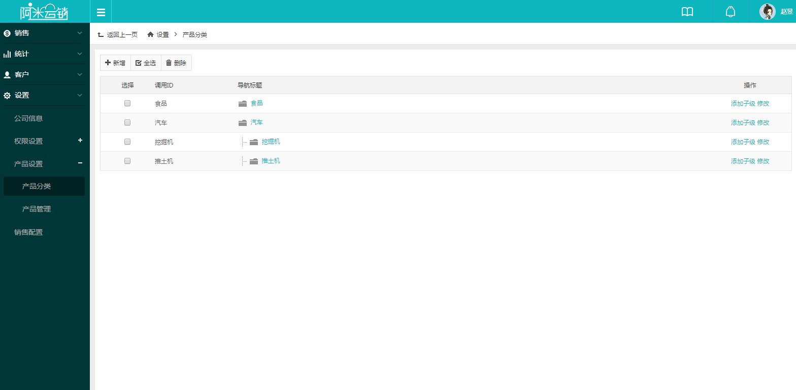
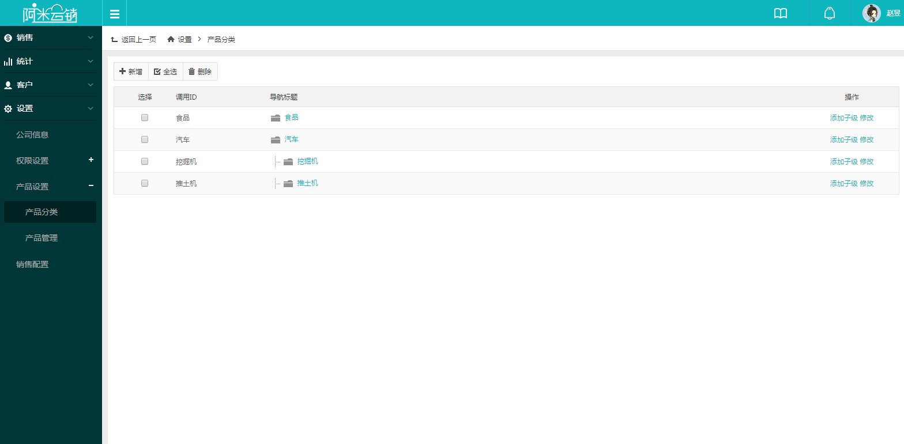

产品设置
产品设置展开分为产品分类和产品管理，首次使用先设置产品分类，再添加具体产品信息。产品类型同组织架构类似以树状结构展示，清晰直观的体现层级分类关系。
分类配置完毕后，进入产品管理页面添加所要销售的产品，点击页面左上方【新增】添加产品信息，首先选择产品所属分类，然后填写产品名称等信息，填写完成后点击提交添加成功。如果同一产品拥有多种规格型号，可在产品添加成功后，点击列表页的规格一栏，进行添加设置。

产品设置展开分为产品分类和产品管理，首次使用先设置产品分类，再添加具体产品信息。产品类型同组织架构类似以树状结构展示，清晰直观的体现层级分类关系。
分类配置完毕后，进入产品管理页面添加所要销售的产品，点击页面左上方【新增】添加产品信息，首先选择产品所属分类，然后填写产品名称等信息，填写完成后点击提交添加成功。如果同一产品拥有多种规格型号，可在产品添加成功后，点击列表页的规格一栏，进行添加设置。